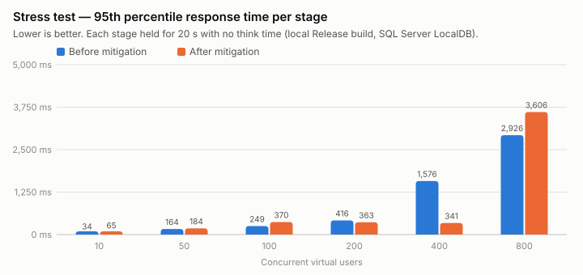
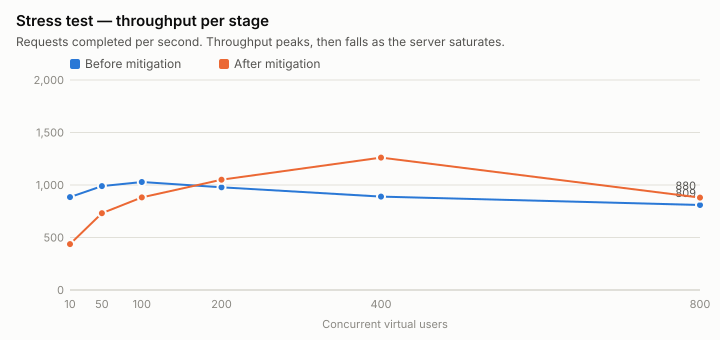
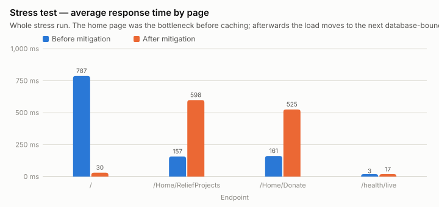
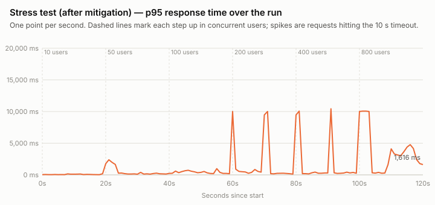
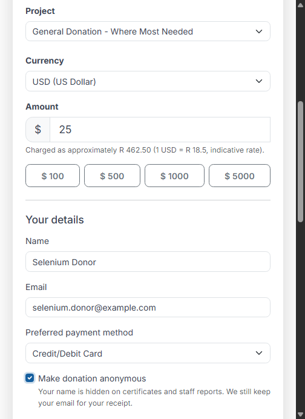
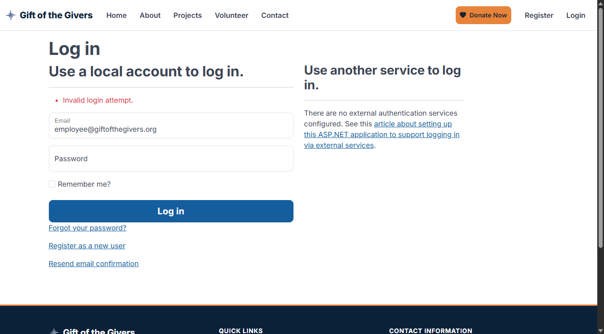
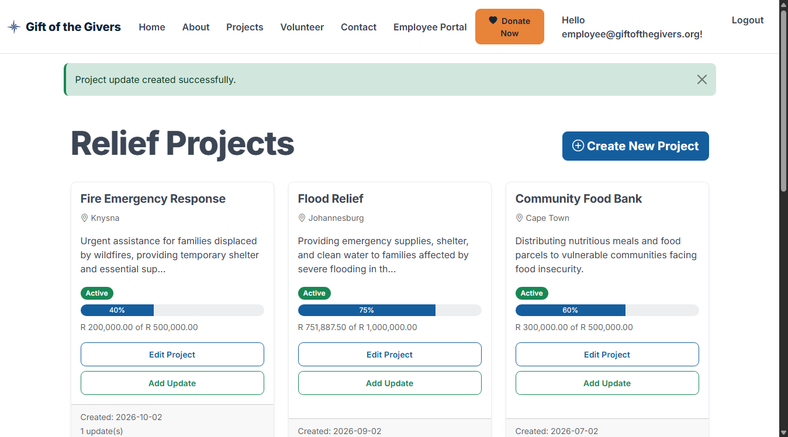

Part 3 — Testing, Deployment and Handover
What was added and changed in Part 3, the evidence for each rubric criterion, the load and stress analysis, the continuous-deployment design and the handover package.
1. Summary
Part 3 turns the Part 2 solution into a tested, deployable product with a handover pack:
| Area | Result | Evidence |
|---|---|---|
| Unit tests (A.1) | 48 unit tests pass, including 12 new DonationService tests with stubbed dependencies | docs/evidence/part3/tests/unit.trx |
| Integration tests (A.2) | 80 integration tests pass, including a full web form → payment notification → Azure Function → database workflow | docs/evidence/part3/tests/integration.trx |
| Code coverage | 89.9 % lines, 67.9 % branches (merged unit + integration) | docs/evidence/part3/tests/coverage-summary.md |
| Load test (A.3) | 20 and 100 concurrent users, 0 errors, p95 6–11 ms | docs/evidence/part3/load-* |
| Stress test (A.3) | 10 → 800 users; bottleneck found (home page), mitigated with caching + index, re-measured, recovery verified | docs/evidence/part3/stress-*, section 5 |
| Selenium UI tests (A.4) | 12 scenarios × 2 browsers (Chrome, Edge) = 24/24 pass, desktop + mobile sizes, negative paths | docs/evidence/part3/ui/*.trx, 20 screenshots |
| Pipeline with tests (B) | Azure Pipeline runs unit → integration → Selenium, publishes 3 test runs, a merged coverage report and a ≥ 70 % coverage gate | azure-pipelines.yml |
| CD (C.1–C.3) | Stages for Azure SQL (idempotent migrations + rollback script), App Service (staging slot, smoke test, swap, automatic swap-back) and Function App (config from secrets, 3-case live test) | azure-pipelines.yml, pipelines/templates/* |
| Handover (D) | User manual (deliverable 10), Azure deployment guide for the team member doing the set-up (deliverable 11), team contribution report (deliverable 12) | docs/deliverables/10–12 |
Evidence gate — action required. The live site still shows the Azure "waiting for your content" page, and the deployment stages have not yet run in Azure DevOps. A PAT shared for this purpose was rejected by Azure DevOps (HTTP 401) when tested on 2026-11-02. Before submission, a team member must follow deliverable 11 (about 2 hours) and capture the screenshots listed in section 10. Until then, sections 7 and 8 describe configuration, not a completed deployment.
2. What changed in Part 3
2.1 New projects
| Project | Purpose |
|---|---|
GiftOfTheGivers.UiTests | Selenium WebDriver tests (xUnit). Starts the real app on a free port with Kestrel and an in-memory database, or targets a deployed site through UI_BASE_URL. Supports Chrome, Edge and Firefox (UI_BROWSER), headless or visible (UI_HEADLESS), and saves labelled screenshots (UI_SCREENSHOT_DIR). |
GiftOfTheGivers.LoadTests | Console load/stress runner, run from Visual Studio or dotnet run. Virtual users follow the donor journey; it writes requests.csv, timeline.csv, summary.json and summary.md. |
2.2 New and changed tests (GiftOfTheGivers.Tests)
| File | Change |
|---|---|
DonationServiceTests.cs | New, 12 unit tests: currency conversion through a stub converter, idempotency, inactive projects, payment verification, replayed and tampered notifications, recalculation. A recording mock checks the audit trail. |
EmployeeWorkflowTests.cs | New, 8 integration tests: create project (valid + invalid dates), post and edit a project update, validation, 404s, volunteer approve → assign → unassign → reject, inquiry handling, offline-funds reconciliation. |
DonorPortalTests.cs | New: donor dashboard totals, donation history ownership, public pages, and DbSeederTests (demo seed is complete and idempotent). |
TaxCertificateFunctionTests.cs | New, 6 integration tests calling the Azure Function in-process against the web app's database. |
| All existing test classes | Tagged [Trait("Category", "Unit")] or "Integration" so the pipeline runs and reports them separately. |
Infrastructure/TestApplicationFactory.cs | Turns off the new cache in tests (Caching:PublicPageSeconds = 0). |
GiftOfTheGivers.Tests.csproj | References the Functions project (aliased functions, because both projects declare Program). |
2.3 Application changes
| File | Change | Why |
|---|---|---|
ViewComponents/ImpactStatsViewComponent.cs | Five aggregate queries cached for Caching:PublicPageSeconds (default 30 s) | Stress-test bottleneck (section 5.3) |
Controllers/HomeController.cs | Featured projects on the home page cached the same way | Same |
Services/AppOptions.cs, Program.cs, appsettings.json | CachingOptions, AddMemoryCache(), "Caching" section | Configurable; 0 disables |
Data/ApplicationDbContext.cs | ReliefProject.Status limited to 20 characters; index IX_ReliefProjects_Status_CreatedDate | Home and project pages filter by status and sort by date |
Data/Migrations/20261102132424_Part3PerformanceIndexes.cs | New migration. Drops and recreates the CK_ReliefProject_Status check constraint around the column change (SQL Server cannot alter a column a constraint depends on), and has a full Down() | Schema update deployed by CD (C.3) |
Controllers/EmployeeController.cs, Data/DbSeeder.cs | RowVersion initialised on new projects | Found by the new integration tests: project creation failed on non-SQL providers |
Controllers/HomeController.cs | Home/VolunteerConfirmation and Home/ContactConfirmation routes | Found by the new public-pages test: the conventional URLs returned 404 |
2.4 Pipelines and tooling
| File | Change |
|---|---|
azure-pipelines.yml | Rewritten: separate unit, integration and Selenium steps; three published test runs; merged coverage; coverage gate; migration and rollback scripts; function packaging; CD stages for SQL, App Service and Functions; live Selenium smoke tests; rollbackDatabase run parameter. |
pipelines/templates/variables.yml | New. Non-secret settings and resource names, plus deployEnabled. |
pipelines/templates/dotnet-setup.yml | New. Reusable SDK + cache + feed authentication + locked restore. |
pipelines/templates/smoke-test.yml | New. Reusable post-deployment health and page checks. |
coverage.runsettings | New. Coverage of hand-written code only (migrations and compiled Razor views excluded). |
.github/workflows/ci.yml | Runs the Selenium suite in headless Chrome and writes a coverage table into the GitHub job summary. |
docs/tools/load_charts.py | New. Draws the load/stress charts from the measured data. |
2.5 Commits
The Part 3 work is in commits b5d1179 (part 3), d45db0e (updates) and 9e7787c (test) on feature/erd-schema-and-pdf. The UI test project, pipeline templates, coverage settings and documents are in the working tree for the next commit.
3. A.1 Unit tests
Where: GiftOfTheGivers.Tests (xUnit), run in Visual Studio's Test Explorer or with dotnet test --filter Category=Unit.
| Class | Tests | Critical logic covered |
|---|---|---|
DonationServiceTests | 12 | Donation capture, USD/EUR → ZAR conversion, idempotency, project availability, payment verification, replay protection, amount/merchant tampering, totals recalculation |
HelperCalculationsTests | 7 | Donation totals, funding percentage, certificate numbers (NuGet helper package) |
CsvTests, MoneyTests | 9 | CSV injection protection, currency formatting |
CurrencyConverterTests | 3 | Rates, unknown currency, rounding |
PayFast*Tests | 5 | Signature, options validation, sandbox vs live |
ModelTests, P1ValidationTests | 8 | Validation attributes (amount range, consent, image URL) |
TaxCertificate*Tests | 3 | Certificate PDF and issuer details |
DatabaseContextTests | 1 | EF Core persistence |
| Total | 48 | All pass (unit.trx) |
Mocks and stubs. DonationServiceTests replaces the ICurrencyConverter with a stub that returns rates set by each test and records every call, and replaces IAuditService with a recording mock that the tests assert on, for example "a verified payment writes exactly one PaymentVerified audit entry". The integration tests use a FakePaymentGateway, so no test ever calls PayFast.
[Fact]
public async Task Capture_ConvertsWithTheInjectedRate_AndStoresPendingDonation()
{
_converter.Rates["USD"] = 18m;
var form = Form(amount: 10m, currency: "USD", type: "Recurring", anonymous: true);
var result = await CreateService().CaptureAsync(form, donorUserId: null);
Assert.Equal(180m, result.Donation!.AmountZar);
Assert.Equal(PaymentStatus.Pending, result.Donation.PaymentStatus);
Assert.Equal(("USD", 10m), _converter.Calls.Single());
}Coverage: 89.9 % of lines and 67.9 % of branches in the application, function and helper assemblies, from unit and integration tests together. Generated code (EF migrations, compiled Razor views) is excluded by coverage.runsettings.
4. A.2 Integration tests
Where: same project, dotnet test --filter Category=Integration. TestApplicationFactory hosts the real application (routing, anti-forgery, authorisation, model binding, views, EF Core) in memory, with an isolated database per test class.
| Class | Tests | Flow |
|---|---|---|
TaxCertificateFunctionTests | 6 | Form → function → database: donate (USD, monthly, anonymous) → function refuses before payment (404) → PayFast notification verifies → function returns a PDF; plus malformed (400), unknown (404) and failed-payment cases |
DonationFlowTests | 20 | Donation capture, currency, idempotency, validation errors, payment notifications (valid, replayed, wrong amount, wrong merchant), certificate ownership |
EmployeeWorkflowTests | 8 | Employee: create project, post/edit update, volunteer lifecycle, inquiries, reconciliation, each with audit-trail checks |
AuthorizationTests | 36 | Every employee page × anonymous / donor / employee |
DonorPortalTests, DbSeederTests, PublicFormsTests, RateLimitingTests | 10 | Donor portal, public pages, contact and volunteer forms, demo seeding, rate limiting |
| Total | 80 | All pass (integration.trx) |
The certificate workflow test, abridged:
var submitted = await TestApplicationFactory.PostFormAsync(client, "/Home/Donate", "/Home/Donate", form);
var donation = await _factory.WithDbAsync(db => db.Donations.SingleAsync(d => d.IdempotencyKey == token));
Assert.Equal(370m, donation.AmountZar); // 20 USD × 18.50
Assert.Equal(HttpStatusCode.NotFound, (await CallFunctionAsync(donation.TransactionReference!)).StatusCode);
await client.PostAsync("/Payments/Notify", /* COMPLETE, amount_gross = 370.00 */);
var response = await CallFunctionAsync(donation.TransactionReference!); // Azure Function, same DB
Assert.Equal("application/pdf", response.Headers.GetValues("Content-Type").Single());Writing these tests exposed two real defects, both fixed (section 2.3): project creation failed when no SQL Server rowversion was generated, and two confirmation pages were unreachable at their conventional URLs.
5. A.3 Load and stress testing
5.1 Configuration
| Setting | Load test | Stress test |
|---|---|---|
| Tool | GiftOfTheGivers.LoadTests (.NET 10 console, HttpClient, one connection pool) | same |
| Target | Release build of the web app, Production environment, SQL Server LocalDB with demo data, http://localhost:5080 | same |
| Journey per virtual user | / → /Home/ReliefProjects → /Home/Donate → /health/live, repeated | same |
| Think time | 1.0–1.5 s between requests (realistic visitors) | none (maximum pressure) |
| Users | 20 for 60 s; 100 for 60 s | stages of 10, 50, 100, 200, 400, 800 users, 20 s each |
| Timeout | 30 s | 10 s (counts as an error) |
| Machine | Windows 11 developer PC, app and load generator on the same machine | same |
Commands:
dotnet run --project GiftOfTheGivers.LoadTests -c Release -- load --base-url http://localhost:5080 --users 20 --duration 60
dotnet run --project GiftOfTheGivers.LoadTests -c Release -- stress --base-url http://localhost:5080 --stages 10,50,100,200,400,800 --stage-seconds 20 --timeout 10The same commands work against Azure with --base-url https://<site>. On a B1 plan, keep the stress stages to 50 users or fewer, so the test does not affect other users.
5.2 Load test results
| Run | Users | Requests | Throughput | Avg | p95 | p99 | Max | Errors |
|---|---|---|---|---|---|---|---|---|
| Before mitigation | 20 | 951 | 15.8 req/s | 5 ms | 11 ms | 33 ms | 189 ms | 0 |
| After mitigation | 20 | 952 | 15.9 req/s | 3 ms | 6 ms | 12 ms | 37 ms | 0 |
| After mitigation | 100 | 4,761 | 79.3 req/s | 4 ms | 11 ms | 44 ms | 132 ms | 0 |
With realistic think time, 100 concurrent visitors are served with no errors and a p95 of 11 ms. Throughput rises in proportion to users, which shows the server is not saturated at this level.
5.3 Stress test: finding the bottleneck


| Users | Before: req/s | Before: p95 | Before: errors | After: req/s | After: p95 | After: errors |
|---|---|---|---|---|---|---|
| 10 | 885 | 34 ms | 0 % | 437 | 65 ms | 0 % |
| 50 | 990 | 164 ms | 0 % | 732 | 184 ms | 0 % |
| 100 | 1,028 (peak) | 249 ms | 0 % | 881 | 370 ms | 0 % |
| 200 | 978 | 416 ms | 0.5 % | 1,051 | 363 ms | 0.6 % |
| 400 | 889 | 1,576 ms | 0 % | 1,261 (peak) | 341 ms | 1.2 % |
| 800 | 809 | 2,926 ms | 0 % | 880 | 3,606 ms | 3.7 % |
Before. Throughput peaked at about 1,030 requests/s at 100 users, then fell while latency rose sharply (p95 1.6 s at 400 users, 2.9 s at 800). The first timeouts (102 requests over 10 s) appeared at 200 users. The per-page breakdown pointed to one cause:

The home page averaged 787 ms, five times slower than the other pages (≈ 160 ms). Each home-page view runs six database queries: five aggregates for the impact figures (ImpactStatsViewComponent) and one for the featured projects. Under concurrency these queries compete for the database connection pool (100 connections by default), so requests queue for a connection.
5.4 Mitigation and re-test
- Cache the impact figures and featured projects in memory for 30 s (
IMemoryCache, configurable throughCaching:PublicPageSeconds). The figures are at most 30 s out of date, which is acceptable for public statistics. - Index
ReliefProjects(Status, CreatedDate), which both public project queries filter and sort on (migrationPart3PerformanceIndexes). - The existing retry logic (
EnableRetryOnFailure) and rate limiting of form posts (20 per minute per IP, HTTP 429) already protect the database and forms from bursts and abuse.RateLimitingTestsproves the limiter works.
After. The home page fell from 787 ms to 30 ms on average. Peak throughput rose by 23 %, from 1,028 to 1,261 req/s, and moved from 100 to 400 users. At 400 users the p95 improved from 1,576 ms to 341 ms.
The bottleneck moved. With the home page cheap, the next database-bound pages (/Home/ReliefProjects 598 ms, /Home/Donate 525 ms on average) took the load, and timeouts at 400–800 users rose to 1.2–3.7 %. The first stage was also slower in the second run (437 vs 885 req/s), most likely because of the cold start after redeploying on the same PC. The timeline shows the spikes are individual requests hitting the 10 s timeout once more than 200 users run with no think time:

Recovery. Straight after the 800-user stage, /health answered HTTP 200 in 49 ms, and a 20-user load test immediately afterwards ran with 0 errors and p95 6 ms. The application recovers without a restart (stress-after/recovery-health.txt, load-20users-after).
5.5 Conclusions and recommendations
| Finding | Recommendation |
|---|---|
| Capacity with realistic users is far above the Foundation's expected traffic (100 users: p95 11 ms, 0 errors). | No change needed for normal operation. |
| Under extreme load the database connection pool is the limit. | Cache the public project list the same way (it changes rarely), and use AsNoTracking projections for list pages. |
| Load tests ran on a developer PC with LocalDB, not on Azure B1 (1 core, 1.75 GB). | Repeat the 20-user load test against the Azure URL after deployment and add the result to this report. Expect higher latencies because of network distance and the smaller plan. |
| During a disaster appeal, traffic can spike 10× or more. | Scale out to 2+ instances (S1) during appeals; Azure SQL serverless or S0 for the database. |
6. A.4 Selenium UI tests
Where: GiftOfTheGivers.UiTests/UserFlowTests.cs. Visual Studio: Test Explorer → GiftOfTheGivers.UiTests → Run. Set UI_HEADLESS=false to watch the browser.
| # | Scenario | Type | Sizes |
|---|---|---|---|
| 1 | Home page loads with Donate and Volunteer links (intro animation skipped) | Smoke | Desktop 1366×900 and mobile 390×844 |
| 2 | Employee logs in → Employee Dashboard | Happy path | Desktop |
| 3 | Wrong password → Invalid login attempt, still signed out | Negative, Smoke | Desktop |
| 4 | Anonymous visitor opens /Employee/Dashboard → redirected to login | Negative, Smoke | Desktop |
| 5 | Anonymous monthly donation in USD, live rand preview (R 462.50), receipt Awaiting payment | Happy path | Desktop and mobile |
| 6 | Donation with invalid email, no amount, no consent → validation errors, nothing saved | Negative, Smoke | Desktop |
| 7 | Volunteer registration → confirmation page | Happy path | Desktop |
| 8 | Volunteer form with required fields empty → rejected | Negative, Smoke | Desktop |
| 9 | Employee posts a project update → success message | Happy path | Desktop |
| 10 | Donor logs in → dashboard → My Donations → tax certificate with Download link | Happy path | Desktop |
Results: 12 test cases (10 scenarios, 2 at two screen sizes), all passing in Chrome 156 and Microsoft Edge 156: 24 of 24 (docs/evidence/part3/ui/ui-chrome.trx, ui-edge.trx, ui-*-console.txt).
Robustness measures: the tests wait for conditions instead of sleeping; they retry stale elements during page changes; they scroll elements into view and fall back to a script click when a floating element covers the target; they load pages eagerly, so slow external fonts cannot time them out; and each test runs in a fresh browser.
Screenshots. Each step saves a labelled PNG. The 20 Chrome screenshots are in docs/deliverables/assets/screenshots/part3/ and are used in the user manual. Three examples:



7. B. Tests in Azure Pipelines
The Build stage of azure-pipelines.yml runs on every commit to main and feature/* and on every pull request into main:
| Step | Detail |
|---|---|
dotnet-setup.yml template | .NET SDK from global.json, NuGet cache, Azure Artifacts authentication, locked restore |
| Build | Release, whole solution |
| Unit tests | --filter Category=Unit, coverage collected, unit.trx |
| Integration tests | --filter Category=Integration, coverage collected, integration.trx |
| Selenium UI tests | headless Chrome, desktop + mobile; screenshots published as artifact ui-screenshots |
| Publish test results ×3 | Three named runs (Unit tests, Integration tests, Selenium UI tests) in the run's Tests tab; any failure fails the build |
| Publish code coverage | PublishCodeCoverageResults@2 merges both Cobertura files into the Code Coverage tab and the build summary |
| Coverage gate | Fails the build if merged line coverage < 70 % (currently 89.9 %) |
| Quality gates | Vulnerable-package scan, EF model-drift check |
| Packaging | migrate.sql, rollback.sql, schema-version.txt, webapp.zip, functions.zip |
The GitHub workflow ci.yml runs the same tests on GitHub and writes a coverage table into the job summary, so every push is also checked before it is mirrored to Azure DevOps.
Status: the YAML is valid and every command in it was run locally. Screenshots of the first Azure DevOps run must be added after the set-up in deliverable 11 (section 10 lists them).
8. C. Continuous deployment
All deployment stages run only on main, wait for the approval on the giftgivers-production environment, and read secrets from the variable group giftgivers-azure, where they are marked secret and masked in logs. No secret is stored in the repository.
8.1 C.1 Web app (App Service)
| Step | Purpose |
|---|---|
AzureAppServiceSettings@1 | Writes Database__MigrateOnStartup=false, ForwardedHeaders__Enabled=true and the connection string (from the secret group) |
AzureWebApp@1 | Deploys webapp.zip, to the staging slot when useStagingSlot: 'true' |
| Smoke test (template) | Waits for /health/live, then checks /health, /, projects, donate, volunteer and login for HTTP 200 |
AzureAppServiceManage@0 Swap | Swaps staging into production with no downtime, then smoke-tests production |
on: failure hook | Automatic rollback: swaps back, restoring the previous build that is still in staging |
Deployment strategy. Blue/green with slots when the plan is Standard (S1) or higher. On Free/Basic plans, slots are not available: the pipeline deploys straight to production, and rollback means re-running DeployWebApp from the last good run, which redeploys that run's own artifact. Both paths are documented in deliverable 11, section 9.
8.2 C.2 Function app
| Step | Purpose |
|---|---|
AzureFunctionApp@2 | Deploys functions.zip (.NET 10 isolated worker) |
AzureAppServiceSettings@1 | ConnectionStrings__DefaultConnection from the secret group, organisation settings, FUNCTIONS_WORKER_RUNTIME |
| Live test, 3 inputs | no key → 401 (function-level authorisation); malformed reference → 400 (validation); valid but unknown reference → 404 (database lookup works). Each call is retried while the function warms up. |
The function key is a secret pipeline variable (functionKey), never in the repository. The same three cases, plus the success path, run in-process on every build (TaxCertificateFunctionTests).
8.3 C.3 SQL database
| Mechanism | Detail |
|---|---|
| Migrations | EF Core migrations are the source of truth; 8 versions, the newest is 20261102132424_Part3PerformanceIndexes |
| Automated script | The build produces an idempotent migrate.sql (each migration is guarded by __EFMigrationsHistory, so it is safe on any database version) and rollback.sql (newest → previous) |
| Deployment | SqlAzureDacpacDeployment@1 runs migrate.sql on Azure SQL, then lists __EFMigrationsHistory in the log, so the schema version is visible in every run |
| App start-up | Database:MigrateOnStartup=false in Azure, so only the pipeline changes the schema |
| Rollback | Run the pipeline with rollbackDatabase ticked: it runs rollback.sql and skips app deployment. For data loss: Azure SQL point-in-time restore (deliverable 11, section 9) |
| Drift protection | The build fails if the model changed without a migration |
Evidence that schema updates and rollback work (SQL Server LocalDB, 2026-11-02, docs/evidence/part3/sql/migration-rollback-evidence.txt): all migrations applied; Part3PerformanceIndexes rolled back to AuditRemediationNov2026; re-applied; __EFMigrationsHistory lists all 8 versions; IX_ReliefProjects_Status_CreatedDate present. The generated forward- and rollback-Part3PerformanceIndexes.sql are stored alongside. The GitHub CI job Apply migrations to SQL Server repeats apply → roll back → re-apply on SQL Server 2022 on every push.
-- rollback-Part3PerformanceIndexes.sql (generated, abridged)
DROP INDEX [IX_ReliefProjects_Status_CreatedDate] ON [ReliefProjects];
ALTER TABLE [ReliefProjects] DROP CONSTRAINT [CK_ReliefProject_Status];
ALTER TABLE [ReliefProjects] ALTER COLUMN [Status] nvarchar(max) NOT NULL;
ALTER TABLE [ReliefProjects] ADD CONSTRAINT [CK_ReliefProject_Status] CHECK ([Status] IN ('Active','Completed','Suspended'));
DELETE FROM [__EFMigrationsHistory] WHERE [MigrationId] = N'20261102132424_Part3PerformanceIndexes';8.4 GitHub → Azure synchronisation
Every push to GitHub runs .github/workflows/mirror-to-azure-devops.yml, which mirrors all branches and tags to Azure Repos with a PAT held in GitHub secrets. Azure Pipelines triggers on the mirrored commit. Deliverable 11, section 5, gives the full set-up and test procedure.
9. D. Handover package
| Item | Location |
|---|---|
| User manual: login (employee / donor / anonymous), posting updates, donations (once-off, monthly, anonymous, ZAR/USD/EUR), tax certificates, volunteering, accessibility, FAQ. 17 labelled screenshots. | Deliverable 10 |
| Azure deployment and GitHub sync guide, for the member doing the set-up | Deliverable 11 |
| Team contribution report with git evidence | Deliverable 12 (names and roles to be completed by the team) |
| Earlier deliverables (requirements, design, schema, plan, CI/CD, audits) | Deliverables 01–08 |
| Raw evidence (TRX, coverage, load CSV/JSON, SQL scripts, screenshots) | docs/evidence/part3/ |
10. Screenshots to capture after the Azure deployment
These cannot be produced until the deployment in deliverable 11 has run. Label each one, for example "Figure C.1-2 — Swap completed".
| For | Screenshot |
|---|---|
| B.1 | YAML in Azure DevOps; a run summary showing Build and test green |
| B.1/B.2 | Tests tab with the three runs (unit 48, integration 80, UI 12) all passing |
| B.2 | Code Coverage tab; the Coverage gate log line |
| B.2 | Commit on GitHub → mirror Action green → triggered run in Azure DevOps (same SHA) |
| C.1 | DeployWebApp log (deploy, smoke test, swap); the live site in a browser; App Service Deployment slots page |
| C.2 | DeployFunctions log with the 401/400/404 results; a browser download of a certificate PDF; Function App → Monitor invocation log |
| C.3 | DeployDatabase log with the __EFMigrationsHistory listing; portal Query editor showing the same table |
| A.3 | Optional: 20-user load test against the Azure URL (summary.md) |
11. Known limitations
- Not yet deployed to Azure (section 1). This is the main risk to the marks for C.1–C.3.
- Load and stress figures come from a developer PC, not from Azure B1.
- Monthly pledges are recorded but not billed automatically (PayFast subscriptions are not integrated). The user manual says so.
- Some mobile-API work (
Controllers/Api,GiftOfTheGivers.Mobile) was still in progress in the working tree when this report was written. It did not compile at that time and is not covered by this report.
12. Declaration of AI assistance
The team must review and complete this declaration so that it is accurate before submission. IIE guidelines allow AI for idea generation, grammar and debugging, but not for writing full code or solutions, or for producing images, diagrams or tables.
- An AI coding assistant (Claude Code) and the GitHub Copilot coding agent (11 commits, visible in the history) were used during this project. In Part 3, AI assistance was used for: [the team lists exactly what, e.g. drafting test cases, the load-test runner, pipeline YAML, this report, the chart script].
- All AI-assisted work was reviewed, run and verified by the team. Every figure in this report comes from test runs whose raw output is in
docs/evidence/part3/. - [Each member states how they personally used AI tools.]
Appendix: run everything locally
# Unit + integration tests with coverage (Visual Studio: Test Explorer → Run All)
dotnet test GiftOfTheGivers.Tests --settings coverage.runsettings --collect "XPlat Code Coverage"
# Selenium (Chrome by default; UI_BROWSER=edge for Edge; UI_HEADLESS=false to watch)
dotnet test GiftOfTheGivers.UiTests
# Selenium against a deployed site, read-only checks only
UI_BASE_URL=https://<site> dotnet test GiftOfTheGivers.UiTests --filter Category=Smoke
# Load / stress (start the app first: dotnet run --project GiftOfTheGivers -c Release --urls http://localhost:5080)
dotnet run --project GiftOfTheGivers.LoadTests -c Release -- load --users 20 --duration 60
dotnet run --project GiftOfTheGivers.LoadTests -c Release -- stress --stages 10,50,100,200 --stage-seconds 20
# Charts from the latest stress results
python docs/tools/load_charts.py
# Rebuild these documents (HTML + PDF)
python docs/tools/build_deliverables.py